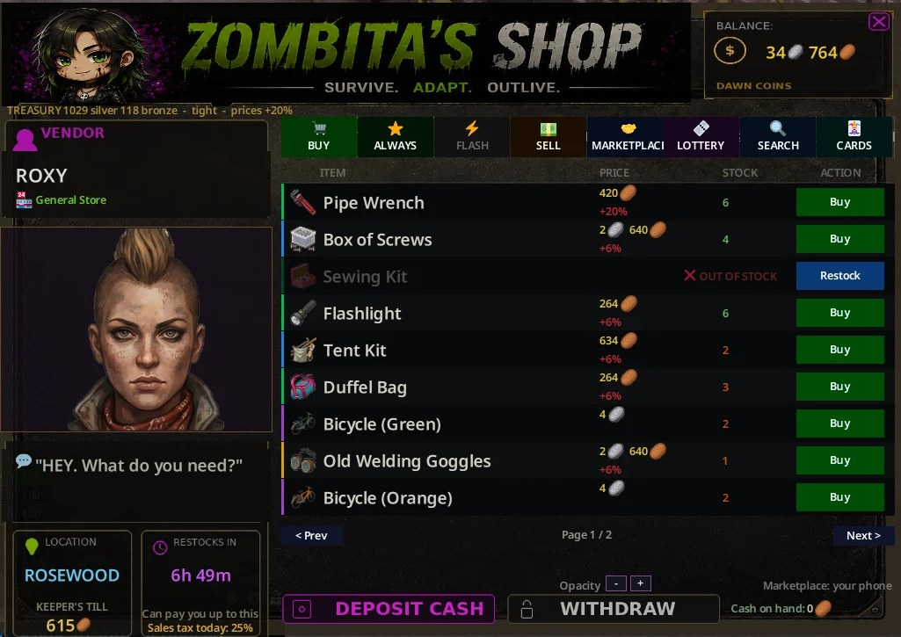

The shop network
The clearest demonstration of cross-runtime sync is the shop system. Named shopkeepers run shops with rotating stock and their own wallets. Stock can be edited from the admin panel, viewed publicly on the website, and bought from in-game.

The shop network on the website: the treasury, and every shopkeeper with what they sell. Screenshot by CiBo.

One keeper's shelves: Viktor's Armory, with prices, stock left and rarity. Screenshot by CiBo.

Dr. Voss's Clinic, with the medic card's medicines and the always-stocked basics. Screenshot by CiBo.

The same shops in game, at a kiosk: the keeper, prices with today's markup, stock, the keeper's till and the next restock. Screenshot by Warrior.

Zombita's lottery at the kiosk: pick a number, see what is left in the pile and the true odds. Screenshot by Warrior.
Why this matters: each of these screenshots shows a web page or an admin panel, and players buy from the same shops in game. It is the same thing, rendered three ways. That is the entire point of Soup as a platform.